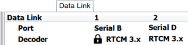

The Data Link tab displays the live statistics of the data communication links used for receiving DGNSS/RTK measurements from various sources, including physical reference stations, network software such as TopNET, Ntrip casters, etc.
Use this page to determine data loss and link viability. Based on this statistics you can see how well your data communication link is performing.
To analyze the data use the following parameters:
It can have the following values:
